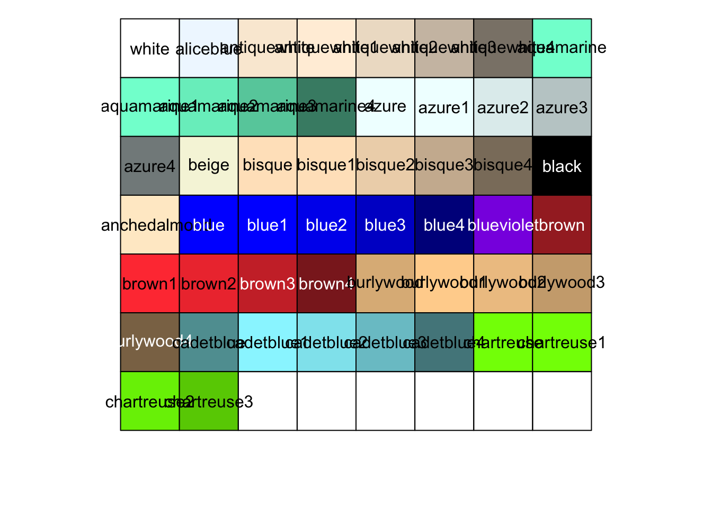
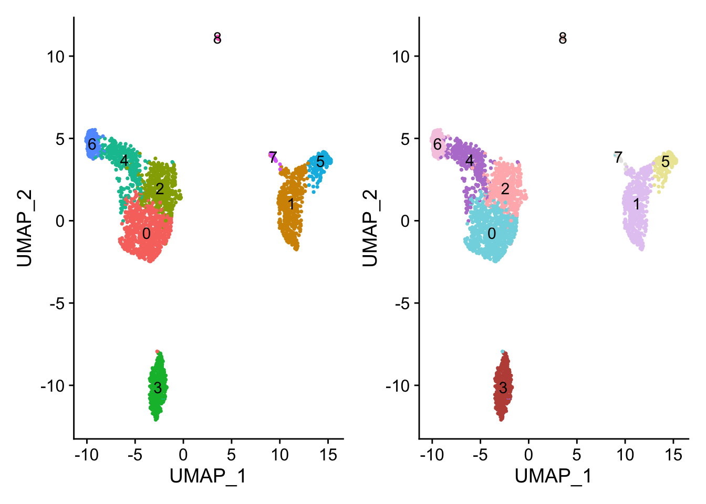
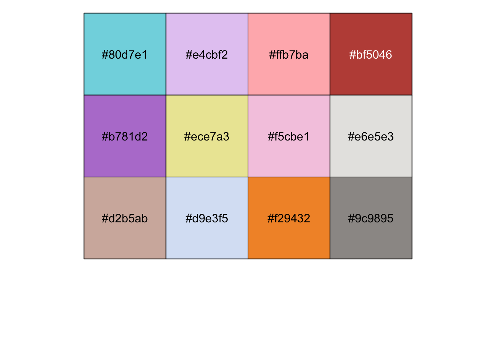
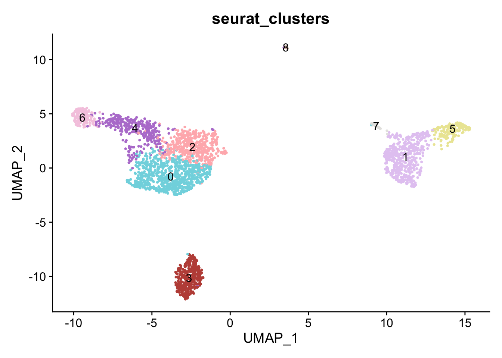
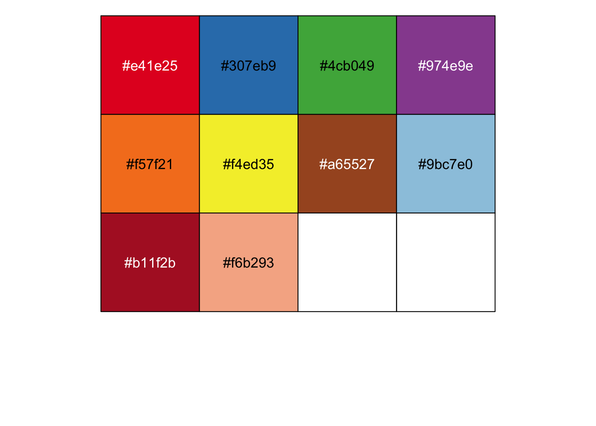
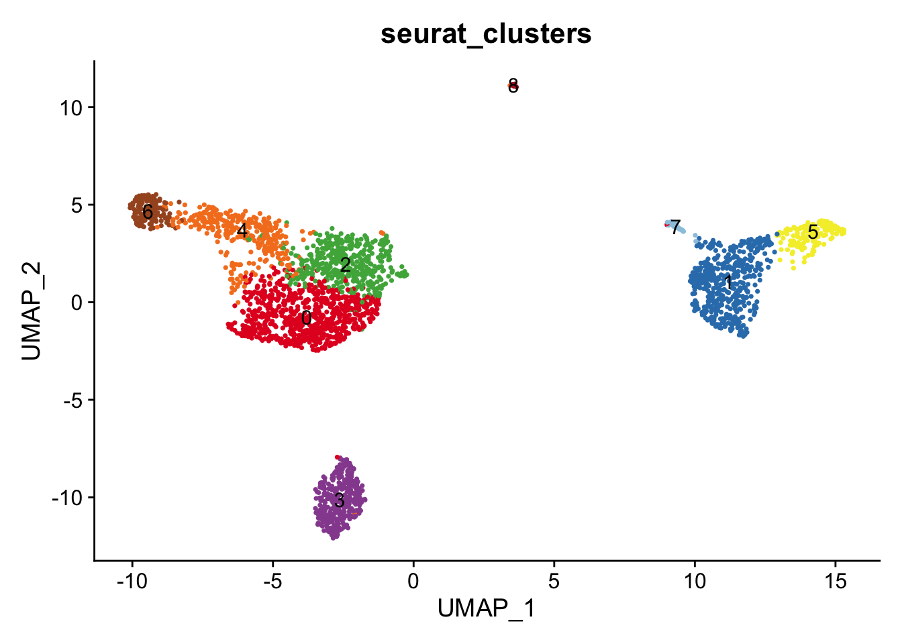
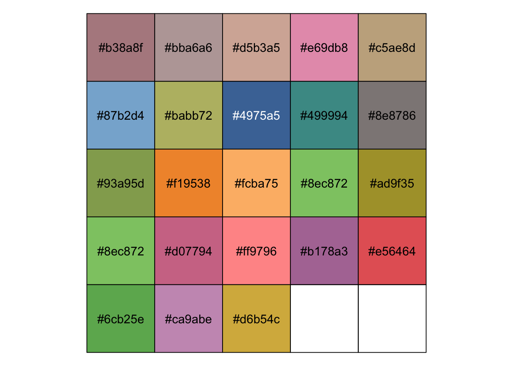
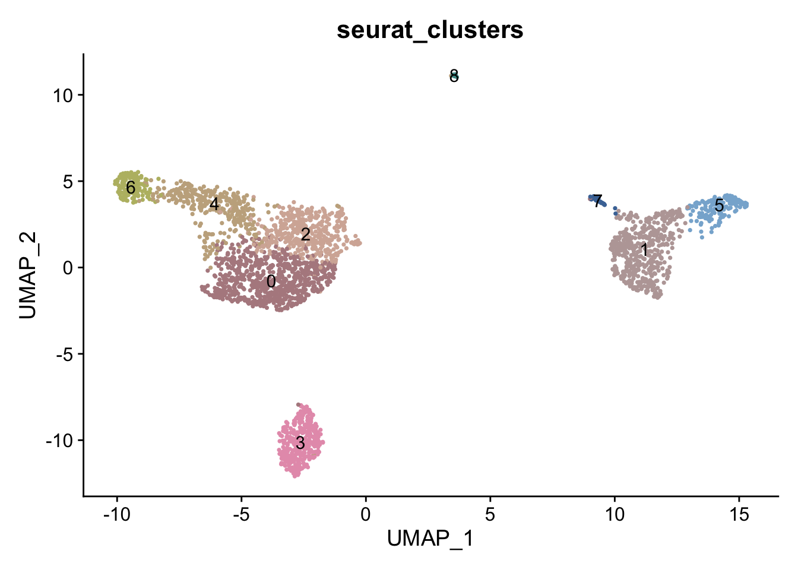

![]()
Color packages

Basic colors
Color()
load(here("projects", "2023_scRNA_Seurat", "pbmc_tutorial.RData"))
# 657 colors
length(colors())
## [1] 657
show_col(colors()[1:50])
cbp <-c(
"#80d7e1","#e4cbf2","#ffb7ba","#bf5046","#b781d2","#ece7a3", "#f5cbe1","#e6e5e3","#d2b5ab","#d9e3f5","#f29432","#9c9895"
)
show_col(cbp)
## Single cell plot
p1 <- DimPlot(pbmc, reduction = "umap",label = T) + NoLegend()
p2 <- DimPlot(pbmc, reduction = "umap",cols = cbp,label = T)+ NoLegend()
p1 + p2
RColorBrewer
library(RColorBrewer)
display.brewer.all()
col <- brewer.pal(9, "Set1")
b1 <- brewer.pal(9, "Set1")
b2 <- brewer.pal(8, "Set2")
mycolor <- c(b1,b2) ggsci
paletteer
library(paletteer)
paletteer_c("scico::berlin", n = 10)
## <colors>
## #9EB0FFFF #5AA3DAFF #2D7597FF #194155FF #11181DFF #270C01FF #501802FF #8A3F2AFF #C37469FF #FFACACFF
paletteer_d("RColorBrewer::Paired",n=12)
## <colors>
## #A6CEE3FF #1F78B4FF #B2DF8AFF #33A02CFF #FB9A99FF #E31A1CFF #FDBF6FFF #FF7F00FF #CAB2D6FF #6A3D9AFF #FFFF99FF #B15928FF
paletteer_dynamic("cartography::green.pal", 20)
## <colors>
## #E5F0DAFF #D9E8CEFF #CDE1C2FF #C1D9B6FF #B5D2AAFF #A9CB9FFF #9DC393FF #91BC87FF #85B47BFF #75AA6BFF #65A15CFF #55974CFF #458D3DFF #35832DFF #287721FF #22651DFF #1C5319FF #164116FF #102F12FF #0A1E0FFFcols4all
# Color from：Nat Med. 2019 Aug;25(8):1251-1259.
cbp <-c(
"#80d7e1","#e4cbf2","#ffb7ba","#bf5046","#b781d2","#ece7a3",
"#f5cbe1","#e6e5e3","#d2b5ab","#d9e3f5","#f29432","#9c9895"
)
show_col(cbp, labels = TRUE)
DimPlot(pbmc, reduction = "umap", group.by='seurat_clusters', label = T) +
scale_color_manual(values = cbp)+
NoLegend()
# Color from：Immunity. 2020 May 19;52(5):808-824.e7.
cbp <- c(
"#e41e25","#307eb9","#4cb049","#974e9e","#f57f21","#f4ed35",
"#a65527","#9bc7e0","#b11f2b","#f6b293"
)
show_col(cbp, labels = TRUE)
DimPlot(pbmc, reduction = "umap", group.by='seurat_clusters', label=T) +
scale_color_manual(values = cbp)+
NoLegend()
# Color from：Cell. 2019 Oct 31;179(4):829-845.e20.
cbp <- c(
"#b38a8f","#bba6a6","#d5b3a5","#e69db8","#c5ae8d","#87b2d4",
"#babb72","#4975a5","#499994","#8e8786","#93a95d","#f19538",
"#fcba75","#8ec872","#ad9f35","#8ec872","#d07794","#ff9796",
"#b178a3","#e56464","#6cb25e","#ca9abe","#d6b54c"
)
show_col(cbp, labels = TRUE)
DimPlot(pbmc, reduction = "umap", group.by='seurat_clusters', label = T) +
scale_color_manual(values = cbp) +
NoLegend()
Pick color from images
# devtools::install_github("joelcarlson/RImagePalette")
library(RImagePalette)
lifeAquatic <- jpeg::readJPEG("color.jpg")
display_image(lifeAquatic)
mycolor <- image_palette(lifeAquatic, n=16)
show_col(mycolor)